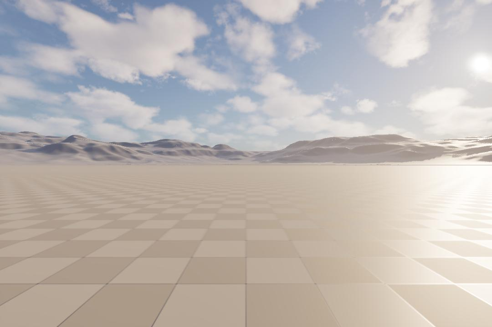

Navegación Autónoma de Drones en Entornos Urbanos con Visión Monocular y Small Language Model (SLM)
Esta documentación reúne el trabajo final de posgrado de la Maestría en Ciencia de Datos de la Universidad Austral. Explora el comportamiento deliberativo de modelos de lenguaje pequeños frente a aproximaciones estándar en la simulación de vuelo en tres dimensiones.
Resumen del Proyecto
Este proyecto de tesis consiste en el diseño, implementación y evaluación experimental de un sistema de navegación autónoma para drones cuadricópteros (eVTOL) operando en entornos urbanos simulados de alta fidelidad.
El núcleo científico es el contraste entre la toma de decisiones basada en Modelos de Lenguaje Pequeños (SLMs) locales y aproximaciones de control convencionales como Máquinas de Estados Finitos (FSM) y pilotaje manual. Se examinan dimensiones clave como la latencia de respuesta, el uso de memoria/VRAM, la robustez ante colisiones y el comportamiento inercial en dinámicas tridimensionales.
Paradigma de Operación: La simulación se ejecuta de manera fotorrealista sobre Unreal Engine 5.5 usando el plugin avanzado Cosys-AirSim, lo que permite evaluar el rendimiento óptico y de control en tiempo real en entornos dinámicos con tráfico urbano y peatones.
Arquitectura del Sistema
El sistema implementa una arquitectura desacoplada de dos niveles (Lazo de Planificación y Lazo de Vuelo Táctico) que interactúan para mantener el vuelo guiado e inteligente del dron.
1. Lazo de Planificación (Ground-Station - airsim-plan)
Se ejecuta en la estación de tierra antes del vuelo. El operador introduce instrucciones en lenguaje natural (ej. "Recorre el perímetro norte a 10m de altitud..."). Un LLM local procesa esta directiva y genera un Contrato de Vuelo estructurado en formato JSON (MissionManifest.json), el cual predefine waypoints, límites de seguridad y parámetros operativos.
2. Lazo de Vuelo Táctico (In-Flight - airsim-loop)
Es un bucle autónomo continuo de alta frecuencia implementado sobre LangGraph que coordina la telemetría y percepción óptica:
- Percepción Visual: Un modelo de red convolucional ligera (YOLOv8n) extrae en tiempo real los fotogramas del feed de video del dron, localizando obstáculos.
- Traductor Pixeles a Palabras: Transforma las bounding boxes en resúmenes lingüísticos textuales (sector del obstáculo: Izquierda/Centro/Derecha, tamaño y proximidad estimada).
- El Gatekeeper: Funciona como un enrutador condicional. Si la escena central está libre de peligros, dirige el flujo a una regla reactiva directa de bajo costo computacional. Si se intercepta un obstáculo, delega la evasión al SLM Local.
- Cerebro Deliberativo (SLM): El modelo local procesa el estado textual y determina maniobras de evasión utilizando decodificación restringida (JSON Schema) para evitar desviaciones estructurales.


Estructura del Repositorio
El código fuente está modularizado en submódulos especializados para optimizar la carga computacional en entornos distribuidos:
airsim-plan
Planificador e interfaz de comando en tierra. Traduce peticiones en lenguaje natural a manifiestos de vuelo estructurados.
airsim-loop
El lazo táctico. Orquesta el procesamiento de imágenes YOLO, la lógica del Gatekeeper de LangGraph y la inferencia con el SLM local.
airsim-mcp
Servidor bajo el Model Context Protocol para exponer control de vuelo y telemetría como herramientas (tools) para agentes externos.
callibration_flight
Planillas, comandos y notebooks estadísticos para comparar la fidelidad inercial y física del simulador contra telemetría de drones reales.
local-llm-eval
Suite de benchmarking local para medir tokens por segundo y latencias de carga de modelos mediante promptfoo y ollama-benchmark.
airsim-kc y poc
Scripts de control manual por teclado y pruebas de concepto rápidas de conexión con la API de simulación.
Stack Tecnológico
El ecosistema tecnológico combina motores gráficos industriales con las últimas técnicas de inferencia de IA local:
| Componente | Herramienta / Framework | Propósito / Rol |
|---|---|---|
| Entorno & Física | Unreal Engine 5.5 + Cosys-AirSim | Simulación física y visual del espacio aéreo urbano. |
| Visión Artificial | YOLOv8-nano (Ultralytics) | Detección de objetos 2D en tiempo real (RGB) para evasión rápida. |
| Orquestación | LangGraph & Pydantic | Implementación del grafo táctico en vuelo de baja latencia. |
| Inferencia Local | Ollama / LM Studio (API OpenAI compatible) | Ejecución abordo de SLMs ligeros en la CPU/iGPU del sistema. |
| Modelos Evaluados | Llama 3.2 (3B), Gemma 2 (2B), Liquid LFM (1.2B / 350M), Phi-4 | Modelos de razonamiento táctico evaluados para el desvío deliberativo. |
| Infraestructura de Inferencia | GPU NVIDIA RTX 5060 + Iris Xe (Headless Node) | Configuración distribuida para mitigar cuellos de botella gráficos. |
Evaluación y Calibración
Un pilar fundamental de la tesis es garantizar la representatividad física del simulador y medir cuantitativamente el comportamiento de los modelos de lenguaje locales.
1. Calibración del Simulador vs. Telemetría Real
Utilizando el dataset público de telemetría de drones DJI, se contrastó la variabilidad física frente a vuelos equivalentes generados en Unreal Engine con Cosys-AirSim.
- Rigidez Física en Giros: Las pruebas estadísticas de Levene confirmaron que la simulación tiene una varianza de actitud significativamente mayor (p << 0.05). En simulación, el dron adopta ángulos extremos de pitch/roll de forma instantánea para seguir la trayectoria, mientras que los límites reales de DJI limitan el giro a un plano de ±30°.
- Estocasticidad y Viento: En tramos rectos estables, la actitud de la simulación es idealizada (varianza ~0), mientras que el dron real exhibe un ruido permanente de ±2° a ±3° provocado por corrientes de aire y correcciones del piloto automático.
2. Benchmark de Inferencia de SLMs Locales
Utilizando ollama-benchmark, se analizó el rendimiento de tokens por segundo (T/s) y la velocidad de carga de diversos modelos ligeros candidatos para la companion computer:
| Model Name | Prompt Eval (T/s) | Evaluation Rate (T/s) | Total Rate (T/s) | Load Time (s) |
|---|---|---|---|---|
| LiquidAI/lfm2.5-350m:latest | 3928.09 | 220.06 | 292.20 | 0.12 |
| LiquidAI/lfm2.5-1.2b-instruct:latest | 1245.20 | 120.67 | 139.95 | 0.11 |
| llama3.2:latest (3B) | 1133.67 | 44.79 | 47.54 | 0.32 |
| gemma2:2b | 240.05 | 54.03 | 55.11 | 0.31 |
| phi4-mini:latest | 238.22 | 37.19 | 37.98 | 0.34 |
| qwen3.5:4b | 153.76 | 28.82 | 29.01 | 0.51 |
* Los modelos de LiquidAI (arquitectura LFM) destacan de manera abrumadora en tasa de generación, convirtiéndose en fuertes candidatos para el procesamiento táctico en vuelo de baja latencia.
Historial de Cambios Destacados
Evolución reciente del repositorio y hitos de desarrollo alcanzados:
Pruebas y ajustes al loop de control autónomo
Carga inicial de pesos de YOLOv8n. Desarrollo de la utilidad de diagnóstico capture_frame.py para validar el procesamiento óptico directo del simulador.

Performance de SLMs locales e integración de promptfoo
Despliegue de suite de evaluación utilizando promptfoo para probar precisión y velocidad de estructuración JSON en modelos ligeros. Los modelos Liquid LFM demuestran un rendimiento sobresaliente.

Ajuste fino (LoRA) y decodificación restringida
Definición del pipeline de ajuste fino eficiente de SLMs locales mediante Low-Rank Adaptation (LoRA) y mitigación de fallas con decodificación guiada por JSON Schema (motores Outlines/Guidance) para evitar alucinaciones.

Vuelo en entorno masivo (City Sample) con tráfico e IA
Optimización del nivel Small_City_LVL para ejecutar simulaciones dinámicas complejas (tráfico masivo y peatones con IA) dentro de la capacidad de la GPU RTX 5060, aplicando las guías de rendimiento de Cosys-Lab.
Instalación y Uso
Siga estos pasos para configurar de forma local tanto el simulador como el entorno del dron:
1. Clonar el entorno e instalar dependencias
Se proporciona un archivo environment.yml para configurar un entorno conda reproducible:
# Crear y activar el entorno conda
conda env create -f environment.yml
conda activate airsimenv2. Configurar el archivo de simulación
Asegúrese de ubicar la configuración correspondiente de Cosys-AirSim en su archivo local Settings.json de AirSim:
{
"SettingsVersion": 2.0,
"SimMode": "Multirotor",
"LocalHostIp": "0.0.0.0",
"ApiServerPort": 41451,
"CameraDefaults": {
"CaptureSettings": [
{
"ImageType": 0,
"Width": 1080,
"Height": 720
}
]
}
}3. Lanzar la misión
Inicie la simulación en Unreal Engine en modo Play. A continuación, ejecute el planificador desde la terminal de comandos:
cd airsim-plan
pip install -e .
airsim-plan run -i "Recorre el perímetro norte a 10 metros de altitud y a velocidad máxima de 5 m/s, esquiva obstáculos"El planificador generará el manifiesto y lanzará el bucle táctico reactivo/deliberativo (airsim-loop).